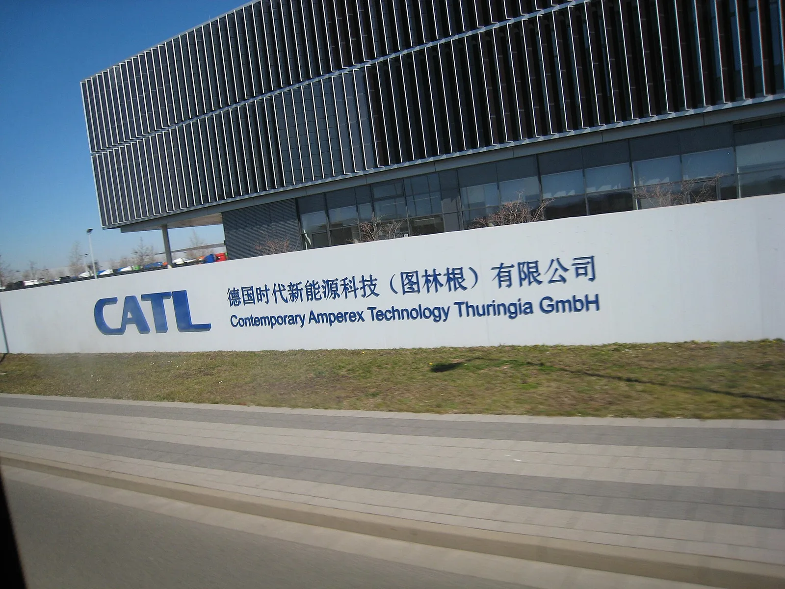

▲ CATL은 배터리 제조사 중 처음으로 셀 단위 수리 서비스를 도입했다 ⓒ Wikimedia Commons
전기차에서 가장 무서운 견적서는 배터리 교체비입니다.
셀 하나가 문제여도 팩 전체를 갈아야 한다는 것이 지금까지의 상식이었습니다. 그래서 견적이 수천만 원이 나옵니다.
CATL이 이 전제를 바꾸고 있습니다. 셀만 교체하는 방식으로 수리비를 10분의 1 수준으로 낮췄습니다.
1. 2,100만 원이 210만 원이 된다는 것
| 방식 | 비용 | 비고 |
|---|---|---|
| 팩 전체 교체 | 10만 위안 (약 2,100만 원) | 기존 방식 |
| 셀 단위 교체 | 1만 위안 (약 210만 원) | 약 10분의 1 |
이 차이는 단순히 수리비 문제로 끝나지 않습니다.
중고 전기차 가격이 낮게 형성되는 큰 이유 중 하나가 "배터리가 나가면 차값보다 수리비가 더 나온다"는 불안입니다. 실제로 5년 된 전기차의 시세가 배터리 교체비보다 낮은 경우가 흔합니다. 수리비가 10분의 1로 떨어지면 이 계산 자체가 달라집니다.
2. 셀투팩에서 셀만 빼낸다는 것
기존 배터리는 셀 → 모듈 → 팩의 3단 구조였습니다. 셀 여러 개를 모듈로 묶고, 모듈 여러 개를 팩에 담습니다.
셀투팩(CTP)은 모듈 단계를 없앤 구조입니다. 셀을 팩에 직접 넣습니다. 공간 효율이 올라가 같은 부피에 더 많은 에너지를 담을 수 있습니다.
| 구조 | 구성 | 수리 |
|---|---|---|
| 기존 (모듈형) | 셀 → 모듈 → 팩 | 모듈 단위 교체 가능 |
| 셀투팩(CTP) | 셀 → 팩 | 구조상 분해가 어렵다는 것이 통념이었다 |
역설적인 지점이 여기 있습니다. 셀투팩은 에너지 밀도를 높이는 대신 수리가 더 어려워지는 구조로 알려져 있었습니다. 셀이 팩에 직접 접합돼 있어 하나만 빼내기 힘들기 때문입니다.
CATL이 내놓은 것은 그 구조에서 셀만 골라내는 공정과 장비입니다. 진단 항목 30가지로 문제 셀을 특정하고, 50가지 수리 방식으로 대응합니다.

▲ 각형 리튬인산철(LFP) 배터리 셀. 팩 안에 이런 셀 수백 개가 들어간다
3. 얼마나 넓게 깔리나
| 구분 | 규모 |
|---|---|
| 직영 센터 목표 | 2026년 하반기까지 전 세계 100개 도시 |
| 프랜차이즈 | 84개국 1,376개 |
| 배터리 교환소 | Choco-SEB 생태계 1,505개 |
| 중국 내 직영 | 8개 개설 |
| 해외 직영 | 노르웨이, 이스탄불 등 |
진행 순서를 보면 전략이 읽힙니다. 2024년 말 서비스 법인을 세우고, 2025년 상하이·방콕·리야드에 센터를 열었습니다. 중국 내수를 먼저 다지고 동남아·중동·유럽 순으로 넓히는 구성입니다.
4. 72시간과 48시간
| 방식 | 소요 시간 |
|---|---|
| 센터 입고 수리 | 72시간 이내 |
| 이동식 트럭 활용 | 48시간 |
이동식이 더 빠르다는 점이 흥미롭습니다. 차를 센터로 옮기는 시간이 빠지기 때문입니다. 배터리를 실은 차량은 견인 자체가 까다로워, 입고 물류가 수리 시간의 상당 부분을 차지합니다.
5. 76.8%라는 숫자
수리 가능한 전기차 모델 비중이 47%에서 76.8%로 올라갔습니다.
이 숫자가 중요한 이유는, 배터리 수리 서비스가 "내 차도 되는가"에 달려 있기 때문입니다. 아무리 좋은 서비스라도 대응 모델이 절반이면 사실상 복권입니다. 76.8%는 기본값으로 기대할 수 있는 수준에 접근한 비율입니다.
| 월간 설치 용량 | 32.59GWh — 세계 최대 |
|---|---|
| 중국 시장 점유율 | 43.2% |
| 수리 대응 모델 비중 | 76.8% (기존 47%) |
점유율 43.2%라는 위치가 이 서비스를 가능하게 합니다. 자사 셀이 들어간 차가 많을수록 서비스망의 단위 비용이 내려갑니다. 후발 배터리 업체가 같은 서비스를 따라 하기 어려운 구조입니다.

▲ 독일 아른슈타트의 CATL 공장. 유럽 서비스망 확대와 맞물린다
6. 국내에서는 어떻게 되나
국내에는 아직 CATL 직영 센터가 없습니다. 다만 국내에서 판매되는 전기차 중 CATL 셀을 쓰는 모델이 늘고 있어, 무관한 이야기가 아닙니다.
국내에서도 배터리 이력 관리와 성능 평가 제도가 정비되는 중입니다. 중고 전기차 거래에서 SOH(배터리 잔존 성능)가 핵심 지표로 자리 잡고 있고, 셀 단위 수리가 가능해지면 SOH가 낮은 차의 처리 방식도 달라집니다.

▲ 셀 단위 수리가 가능해지면 중고 전기차 가격 산정 방식도 달라진다

▲ 수리비가 내려가면 중고 전기차의 가격 산정 기준도 함께 움직인다
7. 정리
CATL이 셀 단위 배터리 수리망을 2026년 하반기까지 전 세계 100개 도시로 넓힙니다. 프랜차이즈는 이미 84개국 1,376개, 배터리 교환소는 1,505개입니다.
수리비는 10만 위안(약 2,100만 원)에서 1만 위안(약 210만 원)으로 약 10분의 1이 됐습니다. 수리 기간은 72시간, 이동식 트럭 활용 시 48시간입니다.
대응 가능한 전기차 모델 비중은 47%에서 76.8%로 올라갔습니다. CATL은 2026년 6월 기준 월 설치 용량 32.59GWh, 중국 점유율 43.2%로 세계 최대 배터리 업체입니다. 국내 직영 센터는 아직 없습니다.